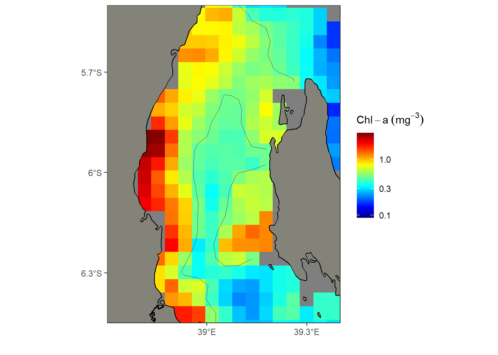

How to handle irregular cell size error when creating Raster in R
![]()
In this blog post, I will discuss how to create a spatraster object from a data frame in R. This can be a useful tool for spatial analysis and visualization, as it allows you to work with raster data in R. To begin, I need to make sure I have the necessary packages installed. I will need the magrittr, tidyverse, terra, and sf packages, which can be loaded using the following code:
Once I have these packages loaded, I can begin creating our spatRaster object. First, I need to create a data frame with our spatial data. This data frame should include columns for the x and y coordinates, as well as any additional variables want to include in our raster. Instead of creating, I am going to download gridded file with rerddap package (Chamberlain, 2019) and specified the geographical bound of the study area as the lines code code below shows;
# A tibble: 6,845 x 4
time latitude longitude chlorophyll
<date> <dbl> <dbl> <dbl>
1 2021-12-31 -4.98 38.0 NaN
2 2021-12-31 -4.98 38.0 NaN
3 2021-12-31 -4.98 38.1 NaN
4 2021-12-31 -4.98 38.1 NaN
5 2021-12-31 -4.98 38.1 NaN
6 2021-12-31 -4.98 38.2 NaN
7 2021-12-31 -4.98 38.2 NaN
8 2021-12-31 -4.98 38.3 NaN
9 2021-12-31 -4.98 38.3 NaN
10 2021-12-31 -4.98 38.4 NaN
# ... with 6,835 more rowsOnce I have a dataframe, I use the rast() function to convert the xyz data frame to a spatRaster object.
It frustrate when seeing the error that suggests that the X cell sizes (i.e., the spatial resolution along the x-axis) in your XYZ file are not consistent, which is required to create a spatRaster Layer. Google or ask chatGPT offers a number of solutions on how to address this problem including interpolate the data. However, when interpolate, you change the grids and also the values.
That is a flaw especially when using remote sensing data, in which ought to state the spatial resolution have used. Recognizing that, I decided to take a long route that ensure that can create a raster layer that is similar to the original dataset. Let’s go along step by step on how I managed to overcome this hurdle
- compute the the minimum and maximum values of the longitude and latitude values. These values are required to define the geogrpahical extent of the spatRaster layer
- Then need to maintain the spatial resoltuion–the grid size of each cell of the value in the raster. I downloaded an eight days mosaicked layer with a spatial resolution of about 4 kilometer. To maintain this resoltuion, I must first extract the unique longitude and latitude values and second is the length of each one. I did this by using
distictandpullfunctions from tidyverse package (Wickham and Wickham, 2017)
- As the raster is an xyz, so far have dealt with longitude and latitude values which represent the x and y dimension. I also need the z dimension, which is the chlorophyll-a value of the dataset I simply downloaded. Unlike the longitude and latitude values, which I computed the minimum and maximum values and the length of them, the z values should remain as raw.
- Once I have the three dimensions of x, y and z values, now I can create a matrix layer using
matrixand specify thenrow = lonLengththat define spacing of longitude andncol = latLengththat specify the latitude spacing. Once the matrix is created, then I use arastfunction from terra package to create spatRaster layer (Hijmans, 2022)
class : SpatRaster
dimensions : 37, 37, 1 (nrow, ncol, nlyr)
resolution : 1, 1 (x, y)
extent : 0, 37, 0, 37 (xmin, xmax, ymin, ymax)
coord. ref. :
source(s) : memory
name : lyr.1
min value : NaN
max value : NaN - The printed output of the
chl_rastshows medatata information and one of the variable is the spatial extent in the formxmin,xmax,ymin,ymax. However, that is the global spatial extent based on thenrowandncolI specified while creating a matrix above. For the spatial extent to resemble those of our geographical area, I need to specify them and I can do that using theextfunction from terra. I parsed the minimum and maximum values of the longitude and latitude from thelonRangeandlatRangeobjects, with values extracted before.
- Once the spatial extent are created, were used to change the global one into the local with
extfunction also from terra package (Hijmans, 2022).
class : SpatRaster
dimensions : 37, 37, 1 (nrow, ncol, nlyr)
resolution : 0.04054054, 0.04054054 (x, y)
extent : 37.97917, 39.47917, -6.479169, -4.979169 (xmin, xmax, ymin, ymax)
coord. ref. :
source(s) : memory
name : lyr.1
min value : NaN
max value : NaN - Notice now the spatial extent is within the geographical areas of the area of interest. I remain with one issue, the z values does not contain any values and that must also be added into the layer. with setValue function from terra package, I was able to add the chlorophyll-a that was extracted before.
class : SpatRaster
dimensions : 37, 37, 1 (nrow, ncol, nlyr)
resolution : 0.04054054, 0.04054054 (x, y)
extent : 37.97917, 39.47917, -6.479169, -4.979169 (xmin, xmax, ymin, ymax)
coord. ref. :
source(s) : memory
name : lyr.1
min value : 0.09031657
max value : 2.96432110 Voila! Now I have a raster layer with defined spatial extent that fit the local area and the chlorophyll values. But I am not sure whether the spatial resolution of 0.04054054 match the 4 kilometer from MODIS. You check that with simple mathematical multiplication. The universe rule of thumb is that one degree for areas close to the equator is equivalent to 110 kilometer and hence by multiplying the spatial resolution of 0.0405 with 110, I get an approximately 4.459 km spatial resolution, which is close to the stated one.
Finally, I plot the spatRaster object using the geom_spatraster() function for continuous grids and geom_spatraster_contour() function for contour lines in ggplot2 (Wickham, 2016).
ggplot()+
geom_spatraster(data = chl_rast, maxcell = 2000)+
geom_spatraster_contour(data = chl_rast, breaks = .5)+
ggspatial::layer_spatial(tz, fill = "#84837a", color = "black", linewidth = .5)+
scale_fill_gradientn(colours = oce::oce.colors9A(120), trans = scales::log10_trans(),
name = expression(Chl-a~(mg^{-3})))+
metR::scale_x_longitude(ticks = .3)+
metR::scale_y_latitude(ticks = .3) +
coord_sf(xlim = c(38.7,39.4), ylim = c(-6.45,-5.5))+
theme_bw()+
theme(strip.background = element_rect(fill = "white"))